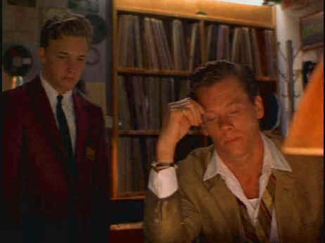

VersaDisc/1998/101m/PS 1.33
 |
Magic's mood music©VersaDisc |
Kevin Bacon is fabulous as
Billy Magic. Bacon maintains an astounding energy level, oozes charm with the same
dexterity that he pops 45s on the platter, and adds a mythic quality to Telling Lies in
America. Brad Renfro is at the awkward stage that young actors often go throw. Renfro
gives Karchy a flat, blunted personality, a mixture of innocence and hunger. Playing
against Bacon’s flamboyant Billy almost everyone pales. Calista Flockhart is the
unlikely object of Karchy’s affection, while Maximillian Schell imbues Karchy’s
father with great dignity.
Part of the first offering from VersaDisc, "the interactive
magazine on DVD," Telling lies in America is a substandard transfer. The image
is far too soft with a number of scenes simply out of focus. Skin tones are oversaturated
and there is some slight bleeding of color. Contrast is all right, though a slightly more
dynamic picture would have suited this tale well. The film is present pan & scan 1.33.
Clearly, a number of compositions suffer from the chopping.
Other features of this initial VersaDisc offering includes a
number of music videos, the games Pax Imperia and Redjack and movie trailers
for Fargo, Bean and The Game. VersaDisc is offered free to
subscribers. Free or not, the quality of the movies they present must be up to DVD
standards. Hopefully the second issue will come up with a clearer picture.